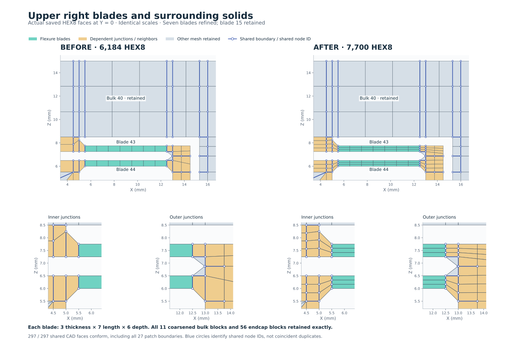

<!doctype html>
<html lang="en">
<meta charset="utf-8">
<meta name="viewport" content="width=device-width,initial-scale=1">
<title>All flexure blades — three-layer refinement</title>
<style>
  *{box-sizing:border-box}body{margin:0;background:#e9eef3;color:#183544;font:15px system-ui,sans-serif}header{position:sticky;top:0;z-index:1;background:#142432;color:#f4f8fb;padding:12px 20px;display:flex;gap:16px;align-items:center;flex-wrap:wrap}header strong{margin-right:auto}button,select,a{font:inherit}button,select{cursor:pointer;border:1px solid #7992a5;border-radius:6px;padding:7px 12px;background:#203646;color:inherit}button[aria-pressed=true]{background:#65d5bb;border-color:#65d5bb;color:#102f2b}main{overflow:auto;padding:16px}img{display:block;width:auto;max-width:100%;max-height:calc(100dvh - 125px);margin:auto;background:white;box-shadow:0 2px 12px #172d3e20}main.zoom img{width:180%;max-width:none;max-height:none;min-width:1400px}footer{padding:0 20px 18px;color:#506576}footer a{color:#244f91}span{white-space:nowrap}
</style>
<header><strong>All 8 blades · 3 thickness layers</strong><select id="view" aria-label="Comparison view"><option value="upper-right">Upper right · blades 43 / 44</option><option value="upper-left">Upper left · blades 55 / 57</option><option value="lower-left">Lower left · blades 59 / 21</option><option value="lower-right">Lower right · blades 53 / 15</option><option value="overview">Whole part</option></select><button type="button" id="zoom" aria-pressed="false">Zoom in</button><span>297 / 297 interfaces conform</span></header>
<main></main>
<footer>Matched views from saved meshes. Coarsened bulk blocks and endcaps retained. <a href="upper-right.svg" id="original" target="_blank">Open full-size figure</a> · <a href="README.md">Case notes</a></footer>
<script>
  const figure=document.querySelector('img'),original=document.querySelector('#original');
  document.querySelector('#view').addEventListener('change',event=>{
    figure.src=original.href=event.target.value+'.svg';
    figure.alt='Before and after: '+event.target.selectedOptions[0].textContent+' with surrounding solids';
  });
  document.querySelector('#zoom').addEventListener('click',event=>{
    const zoom=document.querySelector('main').classList.toggle('zoom');
    event.currentTarget.setAttribute('aria-pressed',String(zoom));event.currentTarget.textContent=zoom?'Fit view':'Zoom in';
  });
</script>
</html>
